Все работы
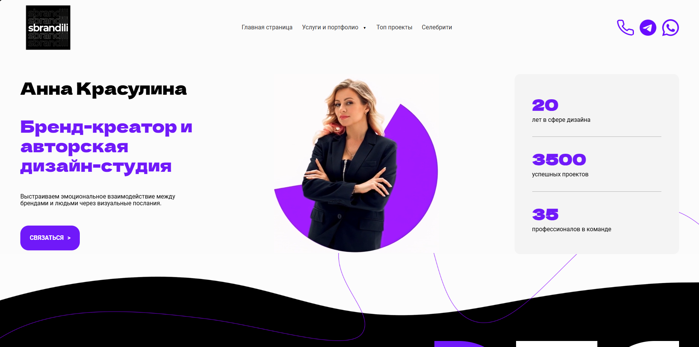
Sbrandili
Фронтенд-разработка внутренних страниц для сайта авторской дизайн-студии и брендингового агентства.
Сверстана основная часть структуры: страницы услуг, детальные кейсы и объемное портфолио (видеоролики, иллюстрации, брендинг). Так как заказчик — профессиональная дизайн-команда, особый упор делался на Pixel Perfect верстку и точную передачу креативных макетов в код.
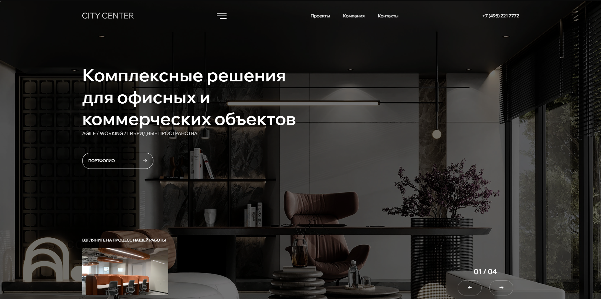
City Center
Фронтенд корпоративного сайта для крупного B2B-генподрядчика (коммерческая недвижимость, объекты в Москва-Сити).
Сверстан сложный интерфейс с акцентом на премиальную подачу услуг и портфолио. Внедрены продвинутые анимации на GSAP и ScrollTrigger — сайт плавно реагирует на скролл, а интерактивные элементы и нестандартные слайдеры работают без рывков на любых устройствах.
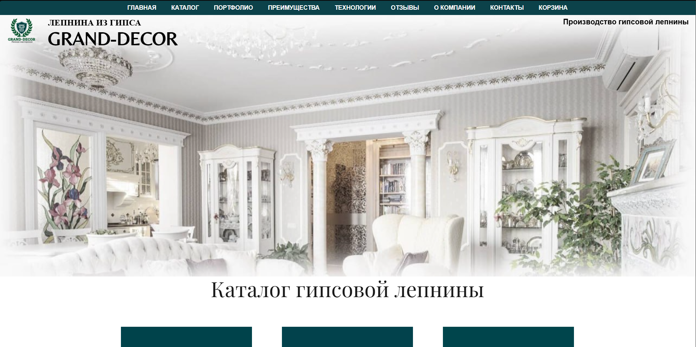
Grand-decor
Разработка объемного сайта-каталога для московского производителя гипсовой лепнины.
Сверстано более 15 категорий товаров и внутренних страниц. Основной упор сделан на понятную навигацию по большому ассортименту, корректное отображение на мобильных устройствах и настройку форм для быстрой связи с отделом продаж.
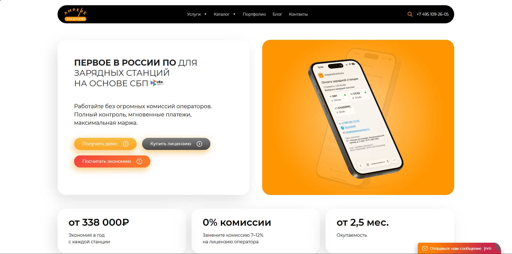
ampere-solutions
Разработка корпоративного сайта и каталога оборудования для инжиниринговой компании, специализирующейся на строительстве инфраструктуры для электромобилей (ЭЗС). Проект ориентирован на крупный B2B-сегмент, застройщиков и государственный сектор.
В рамках проекта реализована продуманная структура многостраничного сайта: удобная навигация по каталогу зарядных станций, детальные страницы услуг и объемное портфолио инфраструктурных объектов с фокусом на привлечение B2B-клиентов.
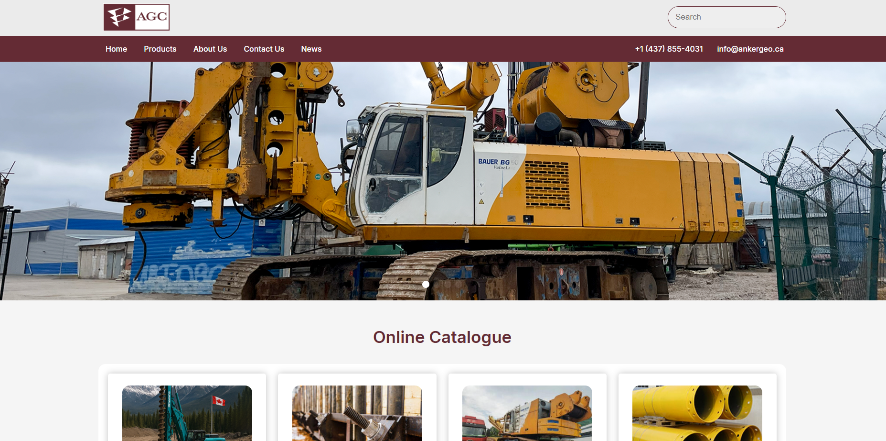
anker geo
Разработка фронтенда для канадского подразделения международной компании. Заказчик специализируется на поставках тяжелого геотехнического оборудования, буровых установок и анкерных систем для крупных инфраструктурных проектов.
Сверстан строгий англоязычный B2B-интерфейс с проработанной структурой каталогов. Для обеспечения максимальной производительности интерфейса не использовались тяжелые фреймворки — сложная логика и кастомные слайдеры написаны полностью на чистом JavaScript, а стилизация выполнена на SCSS.
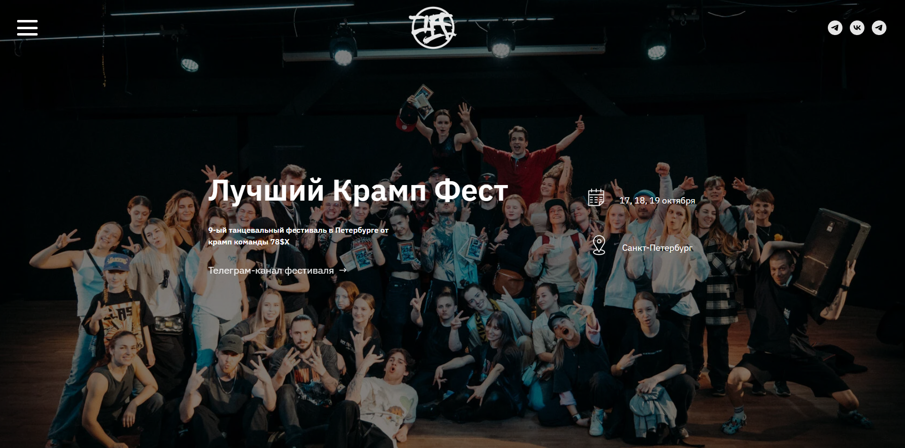
Crump Fest
Разработка промо-лендинга для 9-го международного танцевального фестиваля в Санкт-Петербурге. Задачей было создать атмосферный интерфейс, передающий дух андеграундной культуры, и обеспечить удобную навигацию для участников.
В проекте реализована сложная сетка расписания, система тарификации билетов и кастомная форма регистрации. Верстка выполнена на SCSS (БЭМ), а вся интерактивная логика и отложенная загрузка медиаконтента (iframe) написаны на Vanilla JS для плавной работы на мобильных устройствах.
Каждый год сайт меняется, ссылка перенаправляет на группу в ВК
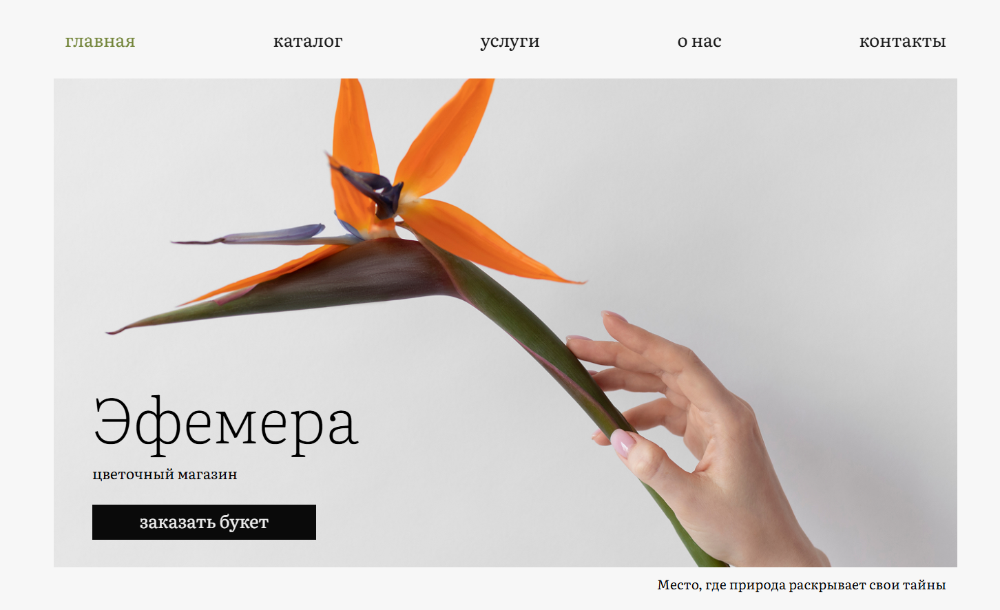
Efemera
Разработка frontend-части для концептуального интернет-магазина флористики «Эфемера». Главной задачей было передать эстетику бренда через аккуратный, минималистичный дизайн и обеспечить удобный пользовательский опыт при выборе букетов.
В проекте реализован интерактивный каталог с функциональной системой фильтрации товаров (монобукеты, композиции, в корзинке). Вся логика работы фильтров и сортировки написана на чистом JavaScript, а стилизация выполнена на SCSS (БЭМ) для обеспечения максимальной скорости загрузки витрины.
Проект на данный момент не является завершенным
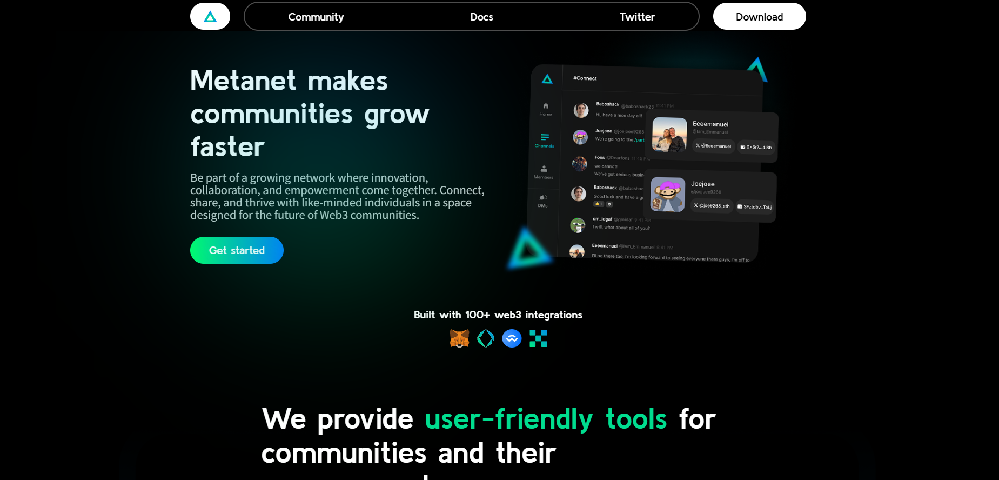
MetaNet
Разработка презентационного лендинга для SaaS-платформы, предназначенной для масштабирования и управления современными Web3-сообществами. Визуальная концепция проекта построена на футуристичном стиле с активным использованием сложных динамических SVG-градиентов и кастомных графических элементов.
В рамках интерфейса реализована адаптивная верстка ключевых модулей системы: сервиса видеоконференций на базе RTC-технологий, инструментов для онлайн-голосований и системы бронирования. Особое внимание уделено чистоте кода и оптимизации тяжелой графики для обеспечения максимальной скорости загрузки страниц.
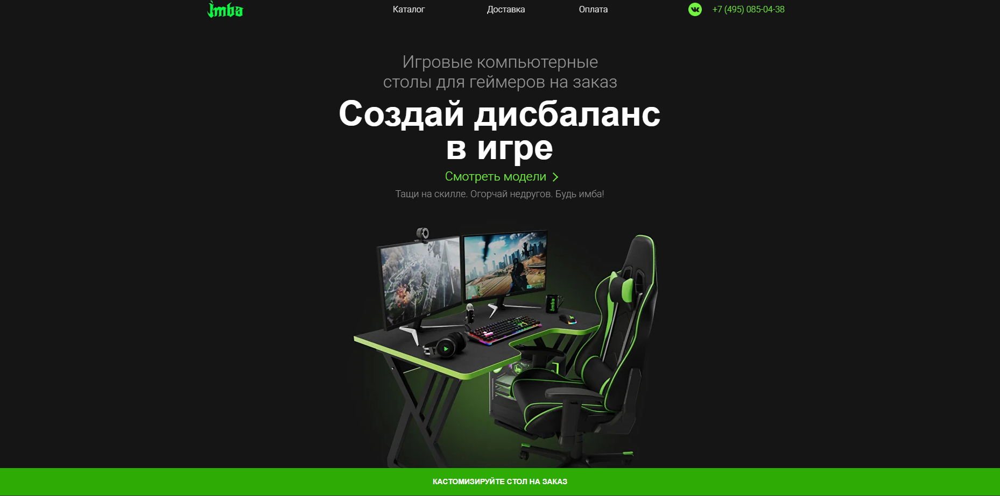
Imba
Фронтенд-разработка агрессивного, динамичного и высокотехнологичного веб-ресурса для проекта IMBA PRO. Главная задача заключалась в создании ультрасовременного интерфейса в темных тонах с неоновыми акцентами, который мгновенно захватывает внимание пользователя, транслирует атмосферу высокой производительности и идеально попадает в эстетику современной цифровой и гейминг-индустрии.
Особый фокус в процессе реализации был смещен на интерактивную составляющую: сложные анимационные таймлайны, микроинтеракции и нестандартные сетки. Благодаря грамотной оптимизации кода и медиа-ресурсов, удалось совместить тяжелый визуальный контент с молниеносной скоростью загрузки страниц, обеспечив безупречный пользовательский опыт (UX) и стабильную работу адаптивной версии на любых экранах.
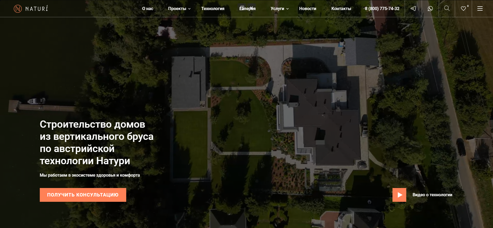
Naturi
Фронтенд-разработка корпоративного ресурса для компании Naturi, специализирующейся на премиальном домостроении по инновационной технологии вертикального бруса. Проект требовал создания чистого, «дышащего» интерфейса, который подчеркивает эстетику натурального дерева и технологическое превосходство метода строительства, транслируя ценности надежности и экологичности.
В процессе работы особое внимание уделялось детальной верстке архитектурных решений и интерактивной подаче конструктивных особенностей домов. Реализован интуитивно понятный пользовательский путь, где высокая производительность и точность визуального исполнения (Pixel Perfect) работают на создание безупречного имиджа бренда в глазах требовательной аудитории.
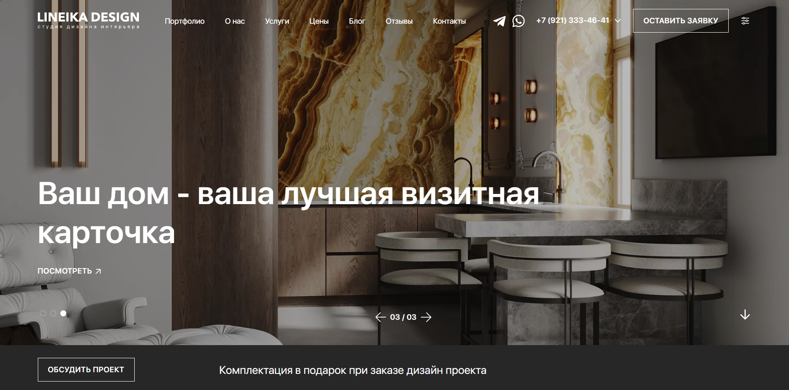
LineikaDesign
Фронтенд-разработка официального сайта для студии архитектурного дизайна и проектирования интерьеров Lineika Design. Основной вызов заключался в создании минималистичного и эстетически выверенного интерфейса, который не перетягивает внимание на себя, а служит безупречным обрамлением для портфолио студии, подчеркивая чистоту линий и строгую геометрию каждого реализованного проекта.
В ходе реализации была внедрена сложная система сетки, позволяющая гармонично сочетать крупноформатные интерьерные рендеры с детальными чертежами и описаниями. Особое внимание было уделено работе с типографикой и отрицательным пространством (white space), что позволило добиться ощущения премиальной легкости, а использование современных методов оптимизации обеспечило плавность переходов и мгновенный отклик интерфейса.